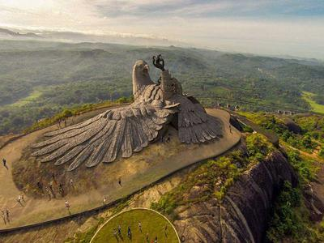

Kollam
One of the premier trade capitals of the Old World, Kollam is the centre of the country’s cashew trading and processing industry. Extolled by Marco Polo and Ibn Batuta in glowing terms, this was once a famous port of international spice trade. This historic town is home to the celebrated Ashtamudi Lake, making it a gateway to the breath-taking backwaters of Kerala. The eight-hour boat trip between Kollam and Alappuzha is the longest and most enchanting experience on the backwaters of Kerala. The momentous decision to introduce a new Malayalam era was convened at Kollam and hence the Malayalam calendar came to be known as kollavarsham.
TOURIST ATTRACTIONS

Jatayu Earth Center
Jatayu Nature Park is a rock-themed park under construction at Chandamalayam in Kollam district of Kerala, all set to open in August 2017. Built to promote mythology and adventure tourism, the tourism centre boasts of 6D theatre, an audio-visual digital room, cable car and ayurvedic cave resort. It is also a home to umpteen adventure activities including paint ball, laser tag, archery, bouldering, rock climbing, air-rifle shooting etc. The primary attraction of the park however, is the world’s largest stone-cut bird sculpture replicating Jatayu, the mythical bird from Ramayana.

Punalur
One of the most surreal tourist spot in Kollam is Punalur that offers a rejuvenating experience and an Old World Charm. Punalur derives its name from two words in Tamil and Malayalam. ‘Punal’ in Tamil means water and the Malayalam word’ ooru’ means place, which combined together give the name Punalur or ‘place of water. Indeed Kallada flows right through the heart of the city with the famous suspension bridge hanging over it. Panalur is known as "Pepper Village of Kerala". Some of the tourist attractions are Shenthruni Forest, Palruvi and Courtallam Waterfalls, and the age-old Pattazhi Devi Temple.

Sasthamkotta Lake
Sasthamkotta Lake is the largest of its kind in Kerala and said to have derived its name from an ancient Sastha Temple located near the lake. It is surrounded by hills on the 3 sides and is the largest source of drinking water for the residents of Kollam. The reason for it being a freshwater source is the presence of larva chaoborus in the water which is responsible of consuming bacteria from the lake water and makes its healthy and fit for drinking. The lake is home for 27 species of freshwater fish. You can do boating and swimming in this lake.